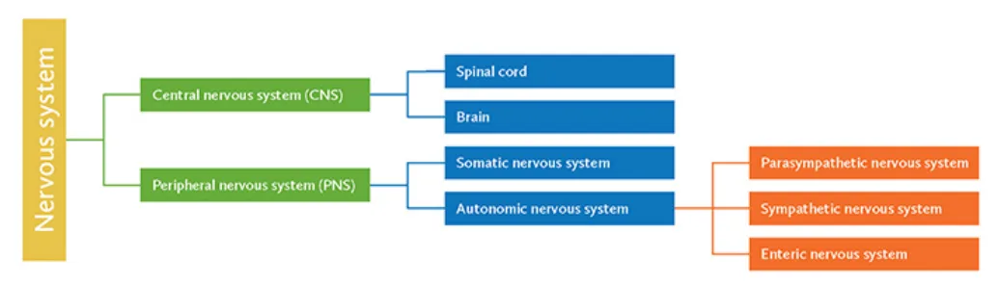
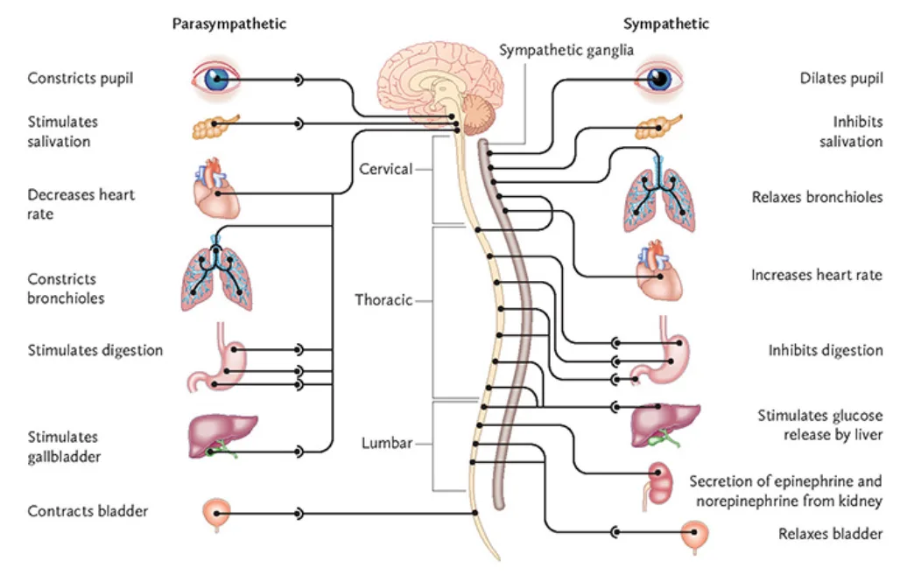
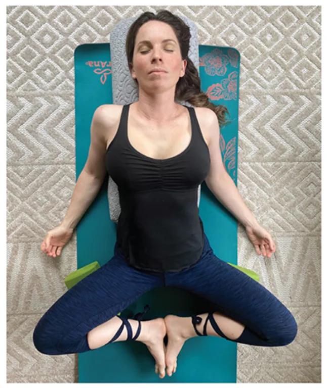
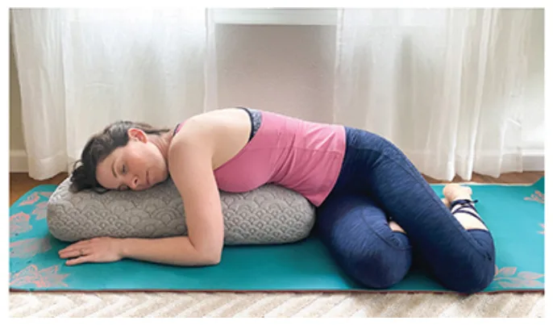
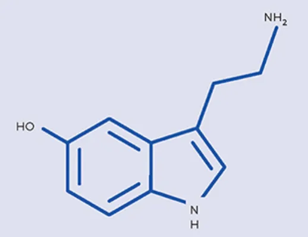
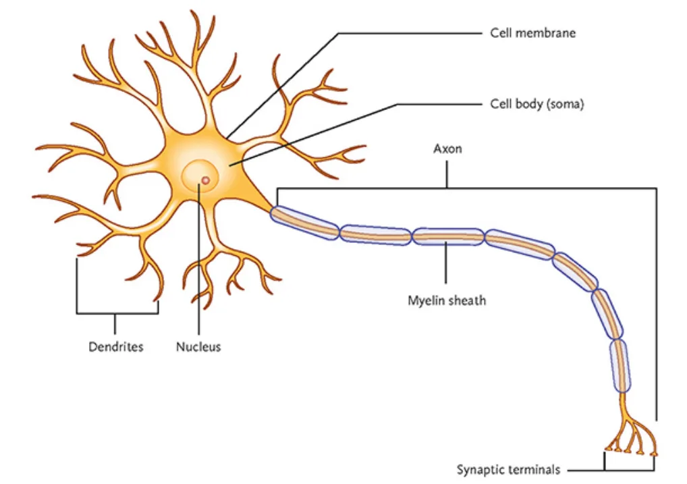
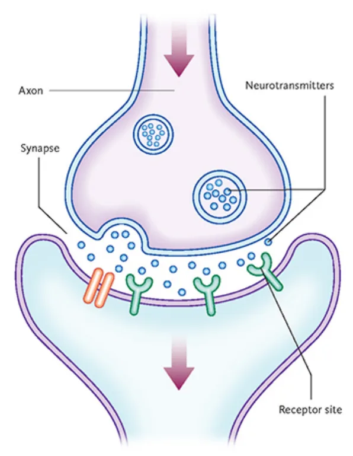
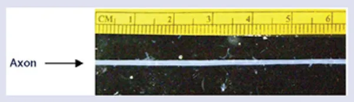
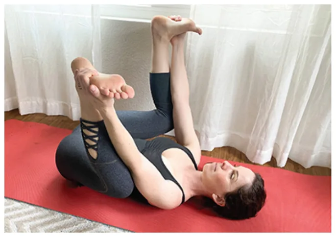
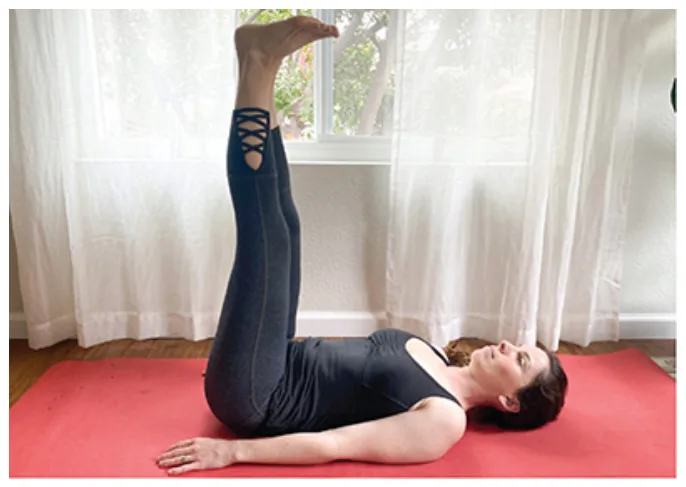

Chương 2 — Hệ thần kinh
CHƯƠNG 2
Hệ Thần Kinh
Yoga và thiền định tác động đến hệ thần kinh, mạng lưới phức tạp gồm các tế bào thần kinh (neuron) và dây thần kinh kết nối mọi cơ quan và mô trong cơ thể. Chương này sẽ đi sâu vào những kiến thức cơ bản về hệ thần kinh để khám phá cách các phương pháp thực hành này có thể ảnh hưởng đến hệ thần kinh giao cảm và hệ thần kinh phó giao cảm thông qua hơi thở, chuyển động và giảm căng thẳng. Chương cũng sẽ đề cập đến cấu trúc giải phẫu cơ bản của tế bào não và các phân tử mà chúng sử dụng để giao tiếp, được gọi là chất dẫn truyền thần kinh.

Hình 2.1 Hệ thần kinh với não bộ, tủy sống và các dây thần kinh.
GIỚI THIỆU
Hệ thần kinh (Hình 2.1) có hai nhánh chính: hệ thần kinh trung ương (CNS) và hệ thần kinh ngoại biên (PNS). CNS bao gồm não bộ và tủy sống, trong khi PNS gồm các tế bào thần kinh và dây thần kinh trải dài khắp cơ thể (Hình 2.2).

Hình 2.2 Tổ chức của hệ thần kinh.
PNS có thể được chia nhỏ hơn nữa thành hai phân hệ chính: hệ thần kinh thân thể (somatic) và hệ thần kinh tự chủ. Hệ thần kinh thân thể truyền tải thông tin về các chuyển động có ý thức, trong khi hệ thần kinh tự chủ truyền đạt thông tin về các phản ứng tự động hoặc không tự chủ. Hệ thần kinh tự chủ là chế độ lái tự động của cơ thể và có thể hoạt động mà không cần suy nghĩ có ý thức. Một số chức năng bao gồm điều hòa nhịp thở, nhịp tim và tiêu hóa (Hình 2.3).

Hình 2.3 Sự khác biệt giữa hệ thần kinh phó giao cảm và hệ thần kinh giao cảm.
Mỗi hệ thần kinh hoạt động theo những cách khác nhau để điều hòa cơ thể.
Nghiên cứu về yoga và thiền định thường tập trung vào hệ thần kinh tự chủ, bao gồm hệ thần kinh giao cảm, phó giao cảm và hệ thần kinh ruột. Hệ thần kinh giao cảm được kích hoạt trong những giai đoạn căng thẳng cũng như khi hoạt động gắng sức. Hệ này thường được cho là kiểm soát phản ứng chiến đấu, bỏ chạy hoặc đóng băng khi đối mặt với nguy hiểm. Chẳng hạn, khi chạm trán một con sư tử, phản ứng tự nhiên có thể là chiến đấu với con sư tử, bỏ chạy khỏi nó, hoặc đứng im để không thu hút sự chú ý. Yoga, thiền định và các kỹ thuật thư giãn khác đã được chứng minh là làm giảm hoạt động của hệ thần kinh giao cảm, giúp cải thiện khả năng ra quyết định khi đối mặt với các tác nhân gây căng thẳng tức thời (Vempati and Telles, 2002; Starcke and Brand, 2012).
Ngược lại, hệ thần kinh phó giao cảm kiểm soát phản ứng thư giãn. Hệ này giúp cơ thể bình tĩnh lại, thư giãn cơ bắp và tiêu hóa thức ăn. Hệ cũng trở nên tích cực hơn trong các giai đoạn vận động nhẹ nhàng, tập thở và thiền định (Anasuya, Deepak and Jaryal, 2021). Hệ thần kinh giao cảm và hệ thần kinh phó giao cảm phối hợp với nhau để duy trì sự cân bằng, hay cân bằng nội môi, trong cơ thể.
Yoga phục hồi (Restorative yoga) là một công cụ dễ tiếp cận giúp kích hoạt hệ thần kinh phó giao cảm và điều hòa giảm hệ thần kinh giao cảm (Hình 2.4). Phương pháp này có thể giảm căng thẳng và làm chậm nhịp tim đồng thời cải thiện trạng thái cảm xúc, quá trình trao đổi chất và tình trạng mệt mỏi (Danhauer et al., 2009; Kanaya et al., 2014; Leong, 2019). Kỹ thuật này được xây dựng dựa trên giáo lý của B.K.S. Iyengar và được Judith Lasater, một học trò của Iyengar, phổ biến vào những năm 1970 (Leong, 2019). Yoga phục hồi bao gồm việc giữ các tư thế yoga thoải mái trong thời gian dài hơn với sự hỗ trợ của các dụng cụ, chẳng hạn như gạch tập, gối ôm và chăn. Sự tập trung được đặt vào hơi thở hoặc âm nhạc để thúc đẩy trạng thái thư giãn sâu. Phương pháp thực hành chậm rãi, có hỗ trợ này rất lý tưởng cho những người đang trải qua căng thẳng và mong muốn phục hồi cũng như chữa lành cơ thể.

Hình 2.4 Tư thế góc cố định nằm ngửa sử dụng một gối ôm và hai gạch tập.
VÍ DỤ VỀ LỚP YOGA PHỤC HỒI ĐỂ THÚC ĐẨY THƯ GIÃN

Hình 2.5 Tư thế dễ dàng có hỗ trợ với hai gạch tập.

Hình 2.6 Biến thể tư thế em bé với hai gạch tập.
Hình 2.7 Tư thế con cá có hỗ trợ với hai gạch tập.

Hình 2.8 Biến thể tư thế cây cầu có hỗ trợ.

Hình 2.9 Biến thể tư thế cây cầu có hỗ trợ.

Hình 2.10 Tư thế vặn mình có hỗ trợ bằng gối ôm.

Hình 2.11 Tư thế gác chân lên tường.
Hình 2.12 Biến thể tư thế gác chân lên tường.
Dây thần kinh phế vị Dây thần kinh phế vị, còn gọi là dây thần kinh sọ số 10 (CN X), là dây thần kinh chính của hệ thần kinh phó giao cảm. Nó kéo dài từ thân não đến đại tràng (còn gọi là ruột già) và giúp điều khiển tim, phổi và đường tiêu hóa. Đây được xem là cầu nối quan trọng giữa ruột và não.

Hình 2.13 Giải phẫu dây thần kinh phế vị.
Các phương pháp thực hành chiêm nghiệm kích thích dây thần kinh phế vị, thúc đẩy sự thư giãn thông qua việc tăng cường hoạt động của hệ thần kinh phó giao cảm. Hệ thần kinh phó giao cảm làm chậm phản ứng căng thẳng để giúp giảm viêm và các hormone gây căng thẳng trong cơ thể (Streeter et al., 2012; McCall, 2013).
Kích thích dây thần kinh phế vị cũng có thể được thực hiện tại phòng khám bằng một thiết bị tạo xung điện. Phương pháp kích thích dây thần kinh phế vị hiện đã được Cục Quản lý Thực phẩm và Dược phẩm Hoa Kỳ (FDA) phê duyệt để điều trị bệnh động kinh và trầm cảm. Phương pháp này cũng đang được nghiên cứu để điều trị các tình trạng khác, bao gồm chấn thương sọ não, viêm khớp dạng thấp và đột quỵ, nhờ tác dụng chống viêm của nó (Johnson and Wilson, 2018).
Sự thật thú vị
Đường ruột sản xuất gần 95% lượng serotonin được tạo ra trong cơ thể (Kim and Camilleri, 2000). Serotonin là một chất dẫn truyền thần kinh hay phân tử tín hiệu giúp điều hòa tâm trạng, giấc ngủ và sự thèm ăn. Năm phần trăm còn lại được sản xuất tại một vùng nhỏ của thân não gọi là nhân đường giữa (raphe nuclei) (Berger, Gray and Roth, 2009).

Hình 2.14 Phân tử serotonin.
Phân hệ thần kinh tự chủ thứ ba là hệ thần kinh ruột. Hệ này giám sát hầu hết các chức năng tiêu hóa, chẳng hạn như nhu động của đường tiêu hóa, đồng thời điều hòa việc tiết dịch tiêu hóa và hormone. Nó cũng kích thích hệ miễn dịch (Fleming et al., 2020). Hệ thần kinh ruột có thể gửi và nhận tín hiệu từ CNS cũng như hoạt động độc lập. Người ta ước tính rằng hệ thần kinh ruột chứa từ 400 đến 600 triệu tế bào thần kinh và sản xuất phần lớn serotonin của cơ thể, một chất dẫn truyền thần kinh ảnh hưởng đến hoạt động của não và có liên quan đến tâm trạng (Fleming et al., 2020). Do đó, hệ thần kinh ruột còn được gọi là “bộ não thứ hai”.
Nghiên cứu về hệ thần kinh ruột đã chỉ ra rằng hệ vi sinh vật đường ruột bị biến đổi có thể ảnh hưởng đến sức khỏe tâm thần và có liên quan đến các bệnh thoái hóa thần kinh, chẳng hạn như Alzheimer và Parkinson (Rao and Gershon, 2016; Rieder et al., 2017; Fleming et al., 2020). Ngược lại, các phương pháp thực hành chiêm nghiệm như yoga và thiền định đã được chứng minh là cải thiện hệ vi sinh vật đường ruột và các triệu chứng của những rối loạn liên quan đến đường ruột, chẳng hạn như hội chứng ruột kích thích (Tavassoli, 2009; Asare, Störsrud and Simrén, 2012; Jia et al., 2020). Hội chứng ruột kích thích có liên quan đến căng thẳng và tình trạng viêm, và những phương pháp thực hành này có thể làm giảm các yếu tố đó để tác động tích cực và chữa lành đường ruột.
Những điểm chính cần nhớ
Hệ thần kinh gồm hai hệ chính: hệ thần kinh trung ương và hệ thần kinh ngoại biên. Hệ thần kinh giao cảm và hệ thần kinh phó giao cảm phối hợp với nhau để duy trì sự cân bằng trong cơ thể. Các phương pháp thực hành thư giãn có thể làm giảm hoạt động giao cảm và tăng hoạt động phó giao cảm. Cả yoga và thiền định đều thúc đẩy sức khỏe đường ruột bằng cách giảm căng thẳng và viêm, từ đó cải thiện hệ vi sinh vật đường ruột.
GIỚI THIỆU VỀ NÃO BỘ
Cơ quan chỉ huy của hệ thần kinh trung ương là não bộ. Nó tạo ra tư duy có ý thức, chuyển động và cảm xúc. Mặc dù đóng vai trò quan trọng, bộ não người chỉ nặng khoảng ba pound (khoảng 1,36 kg). Trọng lượng đó tương đương với một túi khoai tây nhỏ. Mô não được nén dày đặc chứa khoảng 86 tỷ tế bào não chuyên biệt gọi là tế bào thần kinh (neuron), và có thêm 85 tỷ tế bào hỗ trợ phi thần kinh gọi là tế bào thần kinh đệm (glia) (HerculanoHouzel, 2012).
Mỗi tế bào trong số 86 tỷ tế bào thần kinh đó có hàng nghìn kết nối với các tế bào khác (Hawkins and Ahmad, 2016). Những kết nối này được gọi là khớp thần kinh (synapse) và chúng cho phép một tế bào thần kinh gửi tín hiệu đến tế bào khác, thường thông qua một đợt giải phóng các chất hóa học gọi là chất dẫn truyền thần kinh. Cùng nhau, các tế bào thần kinh tạo thành hơn 100 nghìn tỷ kết nối khắp não bộ (Parhi and Unnikrishnan, 2020).
Tế bào thần kinh là một nhóm tế bào đặc biệt truyền tải thông tin khắp cơ thể và não bộ. Giống như các tế bào khác, tế bào thần kinh có một thân tế bào (gọi là soma) với nhân bên trong được bao bọc bởi màng tế bào. Gần soma, tế bào thần kinh có các phần nhô ra gọi là nhánh gai (dendrite) phân nhánh và kết nối với các tế bào và tế bào thần kinh khác (Hình 2.15). Các nhánh gai này tiếp nhận tín hiệu hóa học từ hàng trăm hoặc thậm chí hàng nghìn tế bào khác.

Hình 2.15 Giải phẫu của một tế bào thần kinh.
Ở phía bên kia của thân tế bào là một sợi trục (axon) dài và mảnh. Sợi trục dẫn truyền các tín hiệu điện xuống các đầu tận cùng khớp thần kinh, nơi một tế bào thần kinh kết nối với các nhánh gai của tế bào thần kinh khác.
Các tế bào thần kinh giao tiếp với nhau như thế nào? Tế bào thần kinh kiểm soát việc truyền tín hiệu trong não bằng cách giao tiếp với nhau thông qua các chất dẫn truyền thần kinh. Chất dẫn truyền thần kinh có thể mang tính kích thích hoặc ức chế (xem mục Kiến thức cơ bản về chất dẫn truyền thần kinh), qua đó thúc đẩy hoặc ức chế điện thế hoạt động ở tế bào thần kinh tiếp nhận.
Mọi tế bào thần kinh trong não đều liên tục tiếp nhận tín hiệu. Khi các tín hiệu đầu vào mang tính kích thích lớn hơn các tín hiệu đầu vào mang tính ức chế, một điện thế hoạt động sẽ xảy ra. Điện thế hoạt động là một tín hiệu điện được truyền dọc theo sợi trục của tế bào thần kinh hướng tới một tế bào thần kinh khác. Khi điện thế hoạt động đến khoảng trống nhỏ giữa hai tế bào thần kinh, gọi là khe khớp thần kinh, nó làm cho các chất dẫn truyền thần kinh được giải phóng vào khe đó (Hình 2.16). Các chất dẫn truyền thần kinh gắn vào các vị trí thụ thể trên nhánh gai của tế bào thần kinh tiếp nhận. Sau đó, tế bào thần kinh thứ nhất thu hồi lại một phần chất dẫn truyền thần kinh của mình trong một quá trình gọi là tái hấp thu (reuptake) để quá trình truyền tín hiệu tế bào có thể diễn ra lần nữa.

Hình 2.16 Khớp thần kinh và sự giải phóng chất dẫn truyền thần kinh.
Kiến thức cơ bản về chất dẫn truyền thần kinh
Chất dẫn truyền thần kinh là các phân tử mang tín hiệu từ tế bào thần kinh này sang tế bào thần kinh khác. Người ta cho rằng có hơn 100 loại chất dẫn truyền thần kinh khác nhau (Si and Song, 2018). Một số chất dẫn truyền thần kinh phổ biến là acetylcholine, dopamine, norepinephrine, serotonin, gamma-aminobutyric acid (GABA) và glutamate.
Acetylcholine tham gia vào nhiều chức năng khác nhau, bao gồm co cơ, sự tỉnh táo, chú ý, trí nhớ, học tập và ghi nhớ lại. Dopamine là chất dẫn truyền thần kinh chính được sử dụng trong hệ thống phần thưởng của não bộ. Khi một người mong đợi một phần thưởng, chẳng hạn như giành được giải thưởng, mức độ dopamine trong não sẽ tăng lên. Thông qua các con đường não bộ này, nó cũng có liên quan đến chứng nghiện và lạm dụng chất gây nghiện. Dopamine cũng là một phân tử quan trọng cho vận động. Các con đường dopamine không hoạt động bình thường trong những bệnh lý như bệnh Parkinson (Segura-Aguilar et al., 2014). Norepinephrine được sử dụng trong não và cơ thể để chuẩn bị cho trạng thái kích thích trong quá trình tập luyện, căng thẳng và nguy hiểm. Nó làm co mạch máu để tăng huyết áp. Ngoài ra, nó có thể kích hoạt lo âu, có thể liên quan đến trầm cảm và đóng vai trò trong động lực và phần thưởng (Goddard et al., 2010; España, Schmeichel and Berridge, 2016). Serotonin giúp điều hòa tâm trạng, giấc ngủ và sự thèm ăn. Nó cũng được cho là có tác dụng ức chế cơn đau (Bardin, 2011). Mặc dù một phần chất dẫn truyền thần kinh này được tạo ra trong não, khoảng 95% lượng serotonin trong cơ thể được tạo ra ở đường ruột. Gamma-aminobutyric acid (GABA) là một chất dẫn truyền thần kinh ức chế và làm giảm mức độ giao tiếp giữa các tế bào thần kinh trong não. Nhìn chung, GABA làm giảm hoạt động của hệ thần kinh. Nó có khả năng bị rối loạn điều hòa trong các tình trạng như lo âu và trầm cảm (Kalueff and Nutt, 2007). Glutamate là chất dẫn truyền thần kinh kích thích chính trong não và có thể đóng vai trò trong rối loạn lưỡng cực và tâm thần phân liệt (Goff and Coyle, 2001). Các loại thuốc chứa lithium carbonate mang lại tác dụng ổn định tâm trạng và có thể ổn định nồng độ glutamate trong não.

Hình 2.17 GABA và glutamate điều hòa điện thế hoạt động của các tế bào thần kinh.
Vì GABA là chất dẫn truyền thần kinh ức chế nên nó làm dừng các điện thế hoạt động. Glutamate là chất dẫn truyền thần kinh kích thích và có thể khởi phát một điện thế hoạt động hoặc duy trì điện thế hoạt động tiếp tục truyền đi.
Những điểm chính cần nhớ
Bộ não người nặng khoảng ba pound và chứa 86 tỷ tế bào thần kinh. Các tế bào thần kinh giao tiếp với nhau thông qua các sự kiện điện gọi là điện thế hoạt động, dẫn đến việc giải phóng các chất truyền tin hóa học gọi là chất dẫn truyền thần kinh. Chất dẫn truyền thần kinh cho phép các tế bào thần kinh giao tiếp với nhau.
Các tế bào khác trong não Ngoài tế bào thần kinh, còn có nhiều loại tế bào khác trong não. Thực tế, gần một nửa số tế bào trong não là các tế bào gọi là tế bào thần kinh đệm (glia). Không giống như tế bào thần kinh, tế bào thần kinh đệm không phát ra điện thế hoạt động, điều này đã khiến các nhà khoa học thần kinh bỏ qua tế bào thần kinh đệm và vai trò của chúng trong não trong một thời gian rất dài (Allen and Barres, 2009). Tế bào thần kinh đệm hiện được công nhận với nhiều vai trò đa dạng trong não, bao gồm ảnh hưởng đến cách các tế bào thần kinh giao tiếp và cung cấp dưỡng chất cho sự phát triển (Temburni and Jacob, 2001). Ba loại tế bào thần kinh đệm chính là vi tế bào thần kinh đệm (microglia), tế bào ít nhánh (oligodendrocyte) và tế bào hình sao (astrocyte) (Hình 2.18).
Vi tế bào thần kinh đệm (microglia) là các tế bào miễn dịch của não, chúng giám sát môi trường não để phát hiện bất kỳ kẻ xâm nhập nào, chẳng hạn như vi khuẩn và virus. Microglia cũng đóng vai trò như những người dọn rác của não, làm sạch các mảnh vụn, và như người làm vườn của não, cắt tỉa những kết nối thần kinh không cần thiết. Trong một số rối loạn não như bệnh Alzheimer, microglia của não có thể trở nên hoạt động quá mức, dẫn đến tình trạng viêm và sự lắng đọng các protein độc hại được gọi là mảng amyloid và đám rối tơ thần kinh (Hansen, Hanson and Sheng, 2017).
Tế bào ít nhánh (oligodendrocyte) giúp cách điện cho sợi trục của các tế bào thần kinh trong não truyền đi quãng đường dài bằng cách bọc chúng trong một lớp bao myelin bảo vệ. Bao myelin hoạt động như lớp cách điện giúp các tế bào thần kinh truyền tín hiệu nhanh nhất có thể. Tế bào ít nhánh là những thợ điện của não. Chúng bọc sợi trục trong lớp cách điện giống như cách một người thợ điện bọc dây cáp điện.


Hình 2.18 Các loại tế bào thần kinh đệm khác nhau trong não.
Nguồn: Blausen.com staff (2014), CC BY 3.0 qua Commons. Từ: https://qbi.uq.edu.au/brain basics/brain/brain-physiology/types-glia
Sự thật thú vị Một số loài động vật, chẳng hạn như mực ống, không có myelin. Thay vào đó, chúng có một sợi trục khổng lồ với đường kính cỡ bằng một cây bút chì, rộng hơn khoảng 1.000 lần so với sợi trục điển hình của con người (Coles, 2015). Đường kính lớn hơn giúp chúng truyền tín hiệu nhanh hơn vì chúng thiếu myelin.

Hình 2.19 Sợi trục khổng lồ từ loài mực ống Dosidicus gigas.
Nguồn: Mathur et al., Creative Commons. Từ: http://nerve.bsd.uchicago.edu/nervejs/NERVEhelp.html
Trong những năm 1950, hai nhà khoa học thần kinh Alan Hodgkin và Andrew Huxley muốn nghiên cứu tế bào thần kinh, nhưng họ bị giới hạn bởi công nghệ. Vì vậy, họ đã sử dụng mực ống để tìm hiểu thêm về những tế bào khó quan sát này. Vì sợi trục của mực ống rất lớn nên chúng dễ nghiên cứu hơn, và các nhà khoa học đã có thể khảo sát cách điện thế hoạt động vận hành lần đầu tiên (Hodgkin, Huxley and Katz, 1952). Hodgkin và Huxley sau đó đã được trao giải Nobel Sinh lý học hoặc Y học năm 1963 cho phát hiện của mình.
Tế bào hình sao (astrocyte) là những tế bào hình ngôi sao vận chuyển chất dinh dưỡng đến các tế bào thần kinh và hỗ trợ quá trình giao tiếp giữa tế bào thần kinh với tế bào thần kinh. Tế bào hình sao điều hòa lượng chất dẫn truyền thần kinh xung quanh khớp thần kinh của tế bào thần kinh (Newman, 2003). Hiện vẫn đang có các nghiên cứu về cách tế bào hình sao giúp các tế bào thần kinh giao tiếp.
Còn nhiều loại tế bào thần kinh đệm quan trọng khác. Chẳng hạn, tế bào Schwann tương tự như tế bào ít nhánh, nhưng được tìm thấy ở hệ thần kinh ngoại biên thay vì hệ thần kinh trung ương. Ngoài ra còn có các tế bào biểu mô giúp ngăn chặn những tác nhân xâm nhập đi vào hệ thống máu của não, và các tế bào màng não thất sản xuất dịch não tủy, cùng nhiều loại khác.
TỦY SỐNG
Hệ thần kinh trung ương cũng bao gồm tủy sống (Hình 2.20), một bó dây thần kinh kéo dài khoảng 46 cm (18 inch) từ não đến các đốt sống thắt lưng ở phần lưng dưới (Boonpirak and Apinhasmit, 1994). Mặc dù tủy sống chỉ có đường kính khoảng một cm, nhưng nó chứa khoảng một tỷ tế bào thần kinh (Saritas et al., 2008; Nagel et al., 2017). Do đó, tủy sống hoạt động như một xa lộ thông tin truyền tải tín hiệu giữa não và cơ thể. Tủy sống tham gia vào cả chuyển động tự chủ và không tự chủ. Ví dụ, tủy sống truyền tín hiệu từ não đến các cơ chân để giúp thực hiện chuyển động, và nó chi phối phổi độc lập với não để phục vụ việc hô hấp.

Hình 2.20 Tủy sống kéo dài từ đáy não.
Tủy sống cũng có thể gửi tín hiệu trực tiếp đến các cơ mà không cần qua não trong các chuyển động phản xạ. Phản xạ là những phản ứng tự động, không tự chủ đối với các tín hiệu cảm giác, như vô tình chạm vào chảo nóng. Bàn tay tự động rụt lại theo phản xạ rút lui để tránh bị bỏng. Hành động này bỏ qua não bộ và được xử lý hoàn toàn bởi tủy sống, cho phép tạo ra phản ứng tức thì.
Tủy sống rất mỏng manh, và hai mươi sáu xương gọi là đốt sống bảo vệ tủy sống khỏi bị tổn thương. Mỗi đốt sống nằm kẹp giữa các đĩa sụn, có tác dụng đệm lót, để các đốt sống không bị chấn thương khi vận động hoặc mang vác vật nặng (Hình 2.21).

Hình 2.21 Tủy sống được bao bọc bởi các đốt sống.
Mặc dù được bao bọc bởi các đốt sống, tủy sống vẫn vô cùng mong manh và dễ bị tổn thương. Tổn thương tủy sống có thể gây ra hậu quả tàn khốc vì chấn thương có thể làm gián đoạn dòng thông tin truyền đến và đi từ não, gây ra các rối loạn về vận động và cảm giác, cùng nhiều triệu chứng khác.
Tai nạn ô tô và xe máy là nguyên nhân hàng đầu gây chấn thương tủy sống, và hiện tại vẫn chưa có liệu pháp hiệu quả nào để phục hồi tổn thương tủy sống diện rộng (Mayo Clinic, 2021). Tuy nhiên, các nhà nghiên cứu trên khắp thế giới đang nghiên cứu những cách thức nhằm thay thế chức năng của các dây thần kinh bị tổn thương.
Có nhiều phương pháp thử nghiệm hiện đang được phát triển. Một chiến lược liên quan đến việc tái tạo dây thần kinh bằng cách sử dụng tế bào Schwann, loại tế bào bao quanh dây thần kinh và sửa chữa tổn thương ở hệ thần kinh ngoại biên. Các nhà nghiên cứu đang cấy ghép tế bào Schwann vào các vùng bị tổn thương của tủy sống để xem liệu các tế bào này có thể sửa chữa mô tủy sống trong hệ thần kinh trung ương hay không (Santamaría et al., 2018).
Một chiến thuật khác liên quan đến việc đưa các protein kích thích tăng trưởng vào vị trí tổn thương để định hướng các tế bào thần kinh phát triển và tái kết nối con đường dẫn truyền tín hiệu (Lu et al., 2012). Hãy tưởng tượng các protein để lại một dấu vết mẩu bánh mì để các sợi trục đi theo. Nghiên cứu này vẫn đang tiếp diễn, nhưng các nghiên cứu sơ bộ cho thấy đây có thể là một giải pháp khả thi.
Việc tham gia tập thể dục thường xuyên giúp duy trì sức khỏe cột sống và ngăn ngừa chấn thương. Yoga có thể duy trì sự ổn định chức năng của cột sống cũng như giữ cho các cơ lưng được kích hoạt, khỏe mạnh và linh hoạt (Omkar and Vishwas, 2009). Yoga đã được chứng minh là cải thiện khả năng vận động cột sống, phạm vi chuyển động và sự dẻo dai ở mọi lứa tuổi (Grabara and Szopa, 2015), đồng thời có thể giúp giảm đau lưng (Crow, Jeannot and Trewhela, 2015).
Những điểm chính cần nhớ
Tủy sống chứa khoảng một tỷ tế bào thần kinh và tham gia vào cả chuyển động không tự chủ lẫn tự chủ. Tủy sống rất mong manh, vì vậy việc tăng cường sức mạnh cho lưng và vùng cơ lõi có thể giúp bảo vệ nó an toàn. Tập yoga có thể giúp cải thiện sự ổn định, độ linh hoạt và giảm đau lưng.
VÍ DỤ VỀ CHUỖI YOGA CHO CỘT SỐNG

Hình 2.22 Tư thế co gối chạm ngực.

Hình 2.23 Tư thế em bé vui vẻ.
Hình 2.24 Tư thế chó con duỗi mình.
Hình 2.25 Tư thế chó con vặn mình.
Hình 2.26 Tư thế cây cầu có hỗ trợ.


Hình 2.27 Tư thế nửa cái cày.
TÀI LIỆU THAM KHẢO
Allen, N.J., & Barres, B.A., 2009. Glia: more than just brain glue. Nature, 457(7230), pp.675–677. Anasuya, B., Deepak, K.K., & Jaryal, A., 2021. Yoga practitioners exhibit higher parasympathetic activity and baroreflex sensitivity and better adaptability to 40 mm Hg lower-body negative pressure. International Journal of Yoga Therapy, 31(1), Article_2. https://doi.org/10.17761/2021D-20-00030.
Asare, F., Störsrud, S., & Simrén, M., 2012. Meditation over medication for irritable bowel syndrome? On exercise and alternative treatments for irritable bowel syndrome. Current Gastroenterology Reports, 14(4), pp.283–289. Bardin, L., 2011. The complex role of serotonin and 5-HT receptors in chronic pain. Behavioural
Pharmacology, 22(5 and 6), pp.390–404. Berger, M., Gray, J.A., & Roth, B.L., 2009. The expanded biology of serotonin. Annual Review of
Medicine, 60(1), pp.355–366. Boonpirak, N., & Apinhasmit, W., 1994. Length and caudal level of termination of the spinal cord in
Thai adults. Cells Tissues Organs, 149(1), pp.74–78. Coles, J.A., 2015. Glial cells: invertebrate. Reference Module in Biomedical Sciences. Elsevier. Crow, E.M., Jeannot, E., & Trewhela, A., 2015. Effectiveness of Iyengar yoga in treating spinal (back and neck) pain: a systematic review. International Journal of Yoga, 8(1), p.3. Danhauer, S.C., Mihalko, S.L., Russell, G.B., Campbell, C.R., et al., 2009. Restorative yoga for women with breast cancer: findings from a randomized pilot study. Psycho-Oncology, 18(4), pp.360–368. España, R.A., Schmeichel, B.E., & Berridge, C.W., 2016. Norepinephrine at the nexus of arousal, motivation and relapse. Brain Research, 1641, pp.207–216. Fleming, M.A., 2nd, Ehsan, L., Moore, S.R., & Levin, D.E., 2020. The enteric nervous system and its emerging role as a therapeutic target. Gastroenterology Research and Practice, 2020, 8024171. Goddard, A.W., Ball, S.G., Martinez, J., Robinson, M.J., et al., 2010. Current perspectives of the roles of the central norepinephrine system in anxiety and depression. Depression and Anxiety, 27(4), pp.339–350. Goff, D.C., & Coyle, J.T., 2001. The emerging role of glutamate in the pathophysiology and treatment of schizophrenia. American Journal of Psychiatry, 158(9), pp.1367–1377. Grabara, M., & Szopa, J., 2015. Effects of hatha yoga exercises on spine flexibility in women over 50 years old. Journal of Physical Therapy Science, 27(2), pp.361–365. Hansen, D.V., Hanson, J.E., & Sheng, M., 2017. Microglia in Alzheimer’s disease. Journal of Cell
Biology, 217(2), pp.459–472. Hawkins, J., & Ahmad, S., 2016. Why neurons have thousands of synapses, a theory of sequence memory in neocortex. Frontiers in Neural Circuits, 10, p.23. Herculano-Houzel, S., 2012. The remarkable, yet not extraordinary, human brain as a scaled-up primate brain and its associated cost. Proceedings of the National Academy of Sciences, 109, pp.10661–10668. Hodgkin, A.L., Huxley, A.F., & Katz, B., 1952. Measurement of current-voltage relations in the membrane of the giant axon of Loligo. The Journal of Physiology, 116(4), pp.424–448. Jia, W., Zhen, J., Liu, A., Yuan, J., et al., 2020. Long-term vegan meditation improved human gut microbiota. Evidence-Based Complementary and Alternative Medicine, 7(5). doi: 10.1155/2020/9517897. Johnson, R.L., & Wilson, C.G., 2018. A review of vagus nerve stimulation as a therapeutic intervention. Journal of Inflammation Research, 11, pp.203–213. Kalueff, A.V., & Nutt, D.J., 2007. Role of GABA in anxiety and depression. Depression and Anxiety,
24(7), pp.495–517. Kanaya, A.M., Araneta, M.R., Pawlowsky, S.B., Barrett-Connor, E., et al., 2014. Restorative yoga and metabolic risk factors: the Practicing Restorative Yoga vs. Stretching for the Metabolic Syndrome (PRYSMS) randomized trial. Journal of Diabetes and its Complications, 28(3), pp.406–412. Kim, D.-Y., & Camilleri, M., 2000. Serotonin: a mediator of the brain–gut connection. American
Journal of Gastroenterology, 95(10), pp.2698–2709.
Leong, H., 2019. Restorative yoga. Physical Medicine and Rehabilitation. Available at:
https://www.med.unc.edu/phyrehab/wp-content/uploads/sites/549/2019/09/9.13.2019Wellness.pdf Lu, P., Wang, Y., Graham, L., McHale, K., et al., 2012. Long-distance growth and connectivity of neural stem cells after severe spinal cord injury. Cell, 150(6), pp.1264–1273. Mayo Clinic, 2021. Spinal cord injury. Available at: https://www.mayoclinic.org/diseases conditions/spinal-cord-injury/symptoms-causes/syc-20377890 McCall, C.M., 2013. How might yoga work? An overview of potential underlying mechanisms.
Journal of Yoga & Physical Therapy, 3(1), p.130. Nagel, S.J., Wilson, S., Johnson, M.D., Machado, A., et al., 2017. Spinal cord stimulation for spasticity: historical approaches, current status, and future directions. Neuromodulation: Technology at the Neural Interface, 20(4), pp.307–321. Newman, E.A., 2003. New roles for astrocytes: regulation of synaptic transmission. Trends in
Neurosciences, 26(10), pp.536–542. Omkar, S.N., & Vishwas, S., 2009. Yoga techniques as a means of core stability training. Journal of
Bodywork and Movement Therapies, 13(1), pp.98–103. Parhi, K.K., & Unnikrishnan, N.K., 2020. Brain-inspired computing: models and architectures. IEEE
Open Journal of Circuits and Systems, 1, pp.185–204. Rao, M., & Gershon, M.D., 2016. The bowel and beyond: the enteric nervous system in neurological disorders. Nature Reviews Gastroenterology & Hepatology, 13(9), pp.517–528. Rieder, R., Wisniewski, P.J., Alderman, B.L., & Campbell, S.C., 2017. Microbes and mental health: a review. Brain, Behavior, and Immunity, 66, pp.9–17. Santamaría, A.J., Solano, J.P., Benavides, F.D., & Guest, J.D., 2018. Intraspinal delivery of Schwann cells for spinal cord injury. Methods in Molecular Biology, 1739, pp.467–484. Saritas, E.U., Cunningham, C.H., Lee, J.H., Han, E.T., & Nishimura, D.G., 2008. DWI of the spinal cord with reduced FOV single-shot EPI. Magnetic Resonance in Medicine, 60(2), pp.468–473. Segura-Aguilar, J., Paris, I., Muñoz, P., Ferrari, E., Zecca, L., & Zucca, F.A., 2014. Protective and toxic roles of dopamine in Parkinson’s disease. Journal of Neurochemistry, 129(6), pp.898–915. Si, B., & Song, E., 2018. Recent advances in the detection of neurotransmitters. Chemosensors, 6(1), p.1. Starcke, K., & Brand, M., 2012. Decision making under stress: a selective review. Neuroscience &
Biobehavioral Reviews, 36(4), pp.1228–1248. Streeter, C.C., Gerbarg, P.L., Saper, R.B., Ciraulo, D.A., & Brown, R.P., 2012. Effects of yoga on the autonomic nervous system, gamma-aminobutyric-acid, and allostasis in epilepsy, depression, and post-traumatic stress disorder. Medical Hypotheses, 78(5), pp.571–579. Tavassoli, S., 2009. Yoga in the management of irritable bowel syndrome. International Journal of
Yoga Therapy, 19(1), pp.97–101. Temburni, M.K., & Jacob, M.H., 2001. New functions for glia in the brain. Proceedings of the
National Academy of Sciences, 98(7), pp.3631–3632. Vempati, R.P., & Telles, S., 2002. Yoga-based guided relaxation reduces sympathetic activity judged from baseline levels. Psychological Reports, 90(2), pp.487–494.